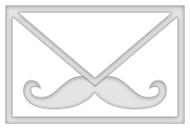

MailCore
An e-mail library for Mac & iOS
MailCore is a Mac and iOS library designed to ease the pain of working with e-mail protocols. MailCore is batteries included with support for SMTP, IMAP, POP3, RFC822, MIME and rendering of HTML messages.
- Getting Started
- Getting the Code
- Documentation
- Mailing List
- Apps Using MailCore
- FAQ
- Consulting
- Authors
Announcing MailCore 2!
From the authors of Sparrow and MailCore 1.0 comes the new and improved MailCore 2! MailCore has been completely redesigned from the ground up with a new blocks based API. It features:
- POP, IMAP, and SMTP support
- RFC822 parser and generator
- UI widgets for rendering HTML messages
- Asynchronous APIs with Objective-C blocks
- iOS and Mac support
- Portable core engine in C++
Getting Started
Fetching Messages
This example shows how to use IMAP to fetch messages from the GMail servers.
Sending a Message
This example shows how you can send email using MailCore.
More examples...
Check out more examples on the project wiki.
Getting the Code
Checkout the code directly from git:
git clone https://github.com/MailCore/MailCore2.git
From there follow the installation instructions.
Documentation
Guides
Reference
Sample Code
- Sample code is included with the project on Github here.
Migrating
Mailing List
There is a low traffic mailing list hosted on Librelist.
- To join send an email to mailcore@librelist.com and reply to the confirmation e-mail. To unsubscribe at anytime send an e-mail to mailcore-unsubscribe@librelist.com.
- Mailing list archives are available.
- For contributors we have a dev mailing list, send an email to this address to subscribe: mailcoredev@librelist.com
Cool Apps Using MailCore
- RelateIQ
- MailSteward
- Pebble
- Airmail
- birdseye
- ForkM
- Quicksilver
- Triage
- CloudPull
- Mail Call
- Boxer
- InboxRuler
- Fileboard
- Remail
- FwdMail
- eMailGanizer
- iPhoto2Gmail
- Prioritiz
- eNotify
- Mail Pilot
- Offline Mail
- WALNUT
- Crono
- BackUp Gmail
- OneMail
- Notify
FAQ
Q: What happened to MailCore 1.0?
A: MailCore 1.0 will continue to be maintained. Under the hood both libraries use the same C library libEtPan. There is a synchronous C++ interface in MailCore 2.0 that would be a suitable replacement for the MailCore 1.0 API. Unfortunately to create a more flexible and asynchronous API we had to start over.
Q: What platforms does MailCore support?
A: Out of the box iOS and Mac OS X are supported. However the core engine is portable C/C++ and could be ported to Linux and Windows, which we are hoping to do. We'd love to see more language bindings against the engine, perhaps Node.js, Python, Ruby?
Q: Can I use MailCore in my commercial app?
A: Absolutely! MailCore is BSD licensed and all dependencies have licenses that are compatible with commercial software
Q: Why no CocoaPods love?
A: We REALLY want to support CocoaPods, but we we first need to create Pods for all the C dependencies.
Q: Can I help out?
Yes, please do! Fork the repo on GitHub and get started hacking or writing docs! Contributions are done using GitHub pull requests. Check the TODO file for items to work on.
More...
More FAQs are available on the GitHub wiki.
Consulting
Consulting services are available via Astro HQ. At Astro HQ we have years of experience working on email apps. If you need custom e-mail functionality developed, please get in touch via our website.
Authors
Thanks from the MailCore team.
Matt Ronge
@mronge
Hoà V. Dinh
@dinhvh
Robert Widmann
@codafi_
Jonathan Willing
@j_willing
Logo designed by Adan Perez. The logo is a modified version of the Mail icon by The Noun Project, used under a CC BY license.
© 2012-2014 Matt Ronge. All Rights Reserved.